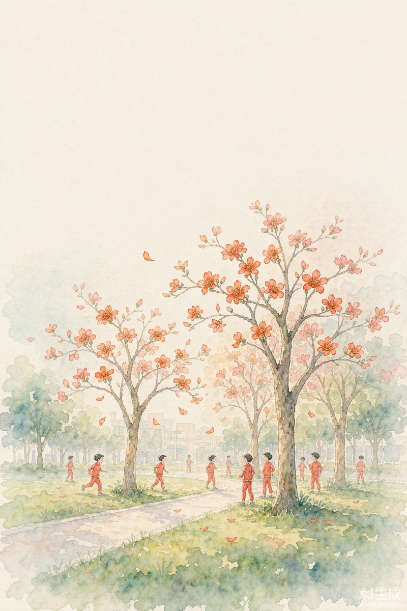
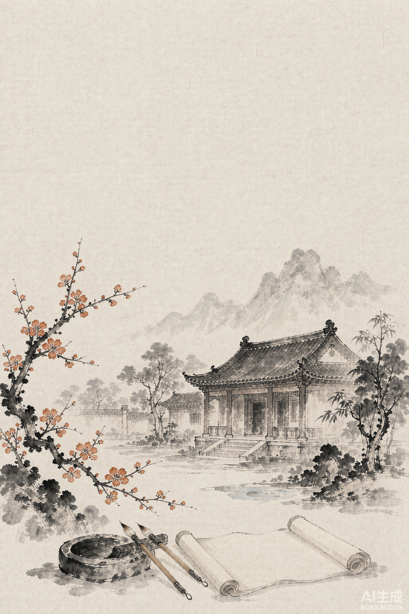
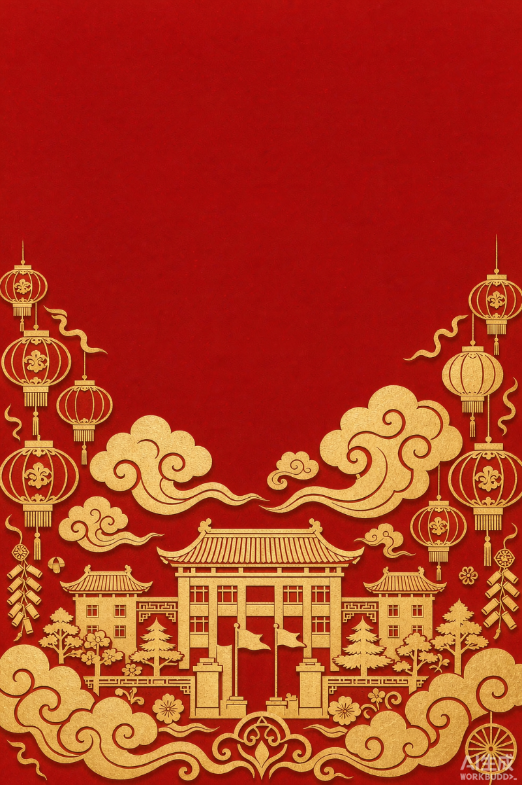
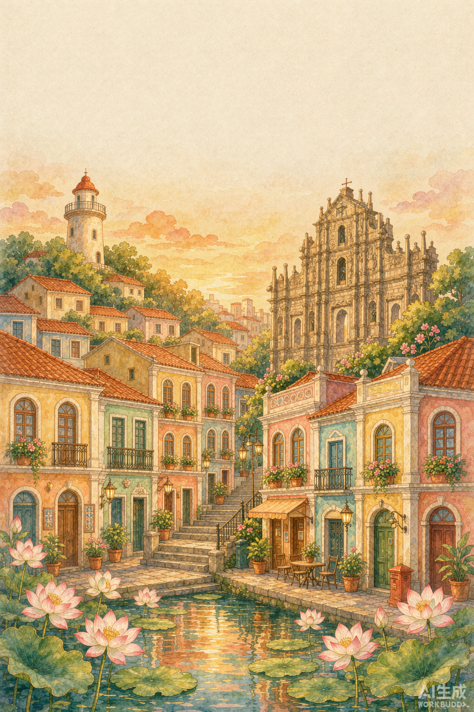
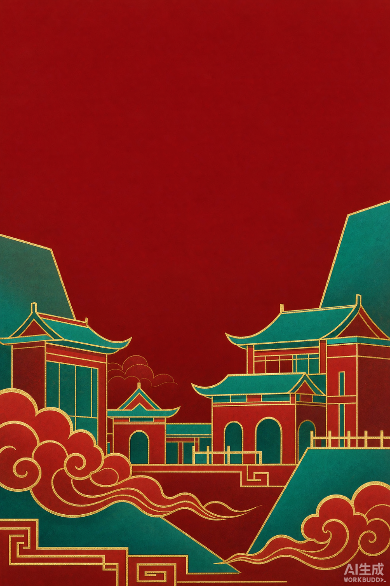

鏡平 134．我與 AI 共創校慶海報
鏡平 134．我與 AI 共創校慶海報任務啟動：你要做什麼？
先看清楚全貌，再動手
三個步驟，一件作品
| 步驟 | 你要做的事 | 放進模板哪一頁 |
|---|---|---|
| 第一部份 | 用 AI 生成一首慶祝鏡平校慶的詩（繁體中文、五言或七言絕句、共 4 句） | 第 2 頁 |
| 第二部份 | 根據詩句的意境，用 AI 生成一幅海報底圖（直向 A3、不要文字、要留白） | 第 3 頁 |
| 第三部份 | 用 Word 把底圖和詩句合成——插入圖片、設定「襯於文字下」、加上文字方塊，變成一張完整校慶海報 | 第 4 頁 |
要交兩件東西
- 校慶海報提交模板（Word 版）.docx（5 頁都填好：封面資料、詩句＋提示詞、底圖＋提示詞、完成的海報、技能檢核）
- 最終完成的海報 PNG 圖片檔
兩個檔案一起上傳到 PL2 的「作業檔案提交」區。
老師會看什麼？（評分四個面向）
| 面向 | 做到這些就是「優異」 |
|---|---|
| A 詩句創作 | 格式完全正確（4 句、五言或七言、押韻）；內容具體結合本校校史或校訓；意象鮮明、有個人特色 |
| B 提示詞設計 與修改 | 提示詞四要素完整；參考資料具體；有兩次以上方向明確的追問修改；能說出每次修改的理由 |
| C 海報畫面 | 主次分明、視線動線清楚；留白運用得當；文字與背景對比良好、易讀；整體和諧有節慶氣氛 |
| D AI 素養 與責任 | 能準確指出 AI 的能力邊界並舉出補位做法；完整標註工具與資料來源；互評具體友善 |
四節課的流程
| 節次 | 主題 | 當節要完成 |
|---|---|---|
| 第 1 節 | 走進鏡平 134 | 校史採集、認識絕句、認識海報視覺元素 |
| 第 2 節 | 生成詩句 | 寫提示詞、生成詩句、追問修改、貼進模板第 2 頁 |
| 第 3 節 | 生成海報底圖 | 畫面規劃、寫提示詞、生成 3 個版本、選圖、貼進第 3 頁 |
| 第 4 節 | 合成與評價 | 用 Word 合成（加詩句）、截圖存 PNG、標註來源、互相評賞、提交 |
走進鏡平 134：校慶背景資料包
寫詩、畫海報的素材都在這裡，可以直接複製給 AI
學校小檔案
| 校名 | 澳門鏡平學校（Escola Keang Peng，簡稱 KP） |
|---|---|
| 創校 | 1892 年，為澳門辦校歷史最悠久的學校；由鏡湖醫院慈善會興辦，前身為「鏡湖義塾」 |
| 校訓 | 誠、毅、精、博 |
| 學風 | 尊師、善學、求實、創新 |
| 教風 | 敬業愛生、科教育才 |
| 宗旨 | 愛國愛澳、服務社群 |
| 現況 | 中小幼一條龍學校，共 92 個教學班，學生逾 3,000 人 |
校史沿革（時間軸）
- 1892曹、周二姓善長捐出物業興辦義學，鏡湖醫院在澳門各區辦學塾，統稱「鏡湖義塾」
- 1911正式立案，改名為「鏡湖小學」
- 1924熱心人士許祥發起籌辦義學，創辦「平民小學」（共七所），並設女子夜校
- 1948慈善會董事何善衡捐出望廈地段，合力籌建新校舍
- 1949「鏡湖小學」與「平民小學」合併，組成「鏡湖平民聯合小學」，余倩嫻女士任校長，學生逾 1,500 人
- 1950新校舍落成啟用；同年何賢先生接任校長
- 1984何德明先生接任校長，學校與時並進，增設電腦及公民課
- 1990崔世安先生任校長，大力推動電化教學、改善環境與設備
- 1992小學原址改建為樓高四層的新校舍，正式改名為「鏡平學校」
- 1997位於黑沙環馬場大馬路的中學部落成啟用
- 1999黎世祺先生接任校長，推行多個六年發展規劃，引領學校高質量發展
- 2016望廈舊校址重建，樓高十層的教學大樓啟用；同年 10 月國務院總理李克強到訪
- 2025曾紀川先生擔任校長，秉持守正創新、服務社群，推動課程教學創新與家國情懷
校訓四個字，各是什麼意思？
寫詩時把校訓的意思寫進去，詩就會很有「鏡平味」。以下整理自學校官網對校訓的解說：
辦學宗旨、目標與育人目標
【澳門鏡平學校 辦學宗旨】 堅持教育為澳門社會發展服務的方向，使受教育者能熱愛祖國，熱愛澳門，在德智體群美諸方面得到全面和諧的發展，為培養有理想、有道德、有知識、有能力、有健全體魄的人才奠定基礎。校訓為：誠、毅、精、博。 【辦學目標】 全面推進素質教育，實施現代教育技術環境下的創思教育，建立高效率的管理系統，建設高素質的師資隊伍，營造良好的校園文化，培養高素質的建設人才，把我校建設成澳門的一流學校。 【育人目標】 德育為首、智育為主、能力為重、全面發展、學有所長。 【校訓釋義】 誠：對自己誠實、言行一致；待人以誠；對祖國忠誠，愛國愛澳愛校。 毅：有堅強意志與毅力，鍥而不捨、知難而進、百折不撓。 精：學習上精益求精，專心致志，掌握扎實知識與基本技能。 博：博學多才，既專且博，多才多藝。 【近期發展與成就】 ．澳門辦校歷史最悠久的學校，創校於 1892 年，至今逾 130 年 ．中小幼一條龍，共 92 個教學班，學生逾 3,000 人 ．2018 年獲國內學科競賽網評為「500 強最佳學校」，並獲「500 強學校最佳校長獎」 ．2019 年獲香港《鏡報》評選為「學校社會責任獎」學校 ．近十年多次在國際 PISA 測試中位居澳門前列 ．大批畢業生獲保送至北京大學、清華大學、復旦大學等內地一流大學 ．2025 年學生團隊在世界青少年英才奧林匹克競賽榮獲 2 金 1 榮譽獎
資料來源：鏡平學校官網「學校沿革」「校訓-學風-教風」頁；澳門特區政府授勳文件（2025）；澳門記憶「鏡湖小學及平民小學史略」。校慶周年數依校方公布為 134 周年。
校歌歌詞
校歌是鏡平人的精神旋律——歌詞裡的「誠毅精博求上進」，唱的就是校訓。想引用校歌精神寫詩時，就從這裡閱讀、複製。
黌宮屹立鏡海濱，萬千學子勤耕耘， 陽光照耀我們要恪守校訓，我們熱愛祖國熱愛澳門， 雨露滋潤，小苗茁壯桃李滿園， 熱愛鏡平學校，誠毅精博求上進， 做個素質全面的人，用我們智慧的頭腦， 用我們勤勞的雙手，不怕困難，勇於攀登， 繼承傳統，光大校譽，共同創造燦爛美好明天。
歌詞由學校提供。
自由選擇：你的探究方向是哪一個？
以下是五個探究方向，你可以任選一個（或多個）深入研究——方向是給你靈感的，最後詩只寫一首。
| 方向 | 探究題目 | 可以在哪裡找 |
|---|---|---|
| 方向一 | 歷史沿革：學校從 1892 年走到今天 | 本頁時間軸、學校官網「學校沿革」 |
| 方向二 | 辦學理念與校訓「誠、毅、精、博」 | 本頁「辦學宗旨、目標與育人目標」 |
| 方向三 | 校歌（歌詞內容與精神） | 本頁「校歌歌詞」 |
| 方向四 | 校園環境與特色（校舍、校徽、KP 娃娃） | 本站素材下載區的校徽、校園照片、KP 娃娃 |
| 方向五 | 近年成就與校友發展 | 本頁「近期發展與成就」 |
絕句入門：什麼是絕句？
先懂規則，才知道要叫 AI 做什麼
四個規則，一個都不能少
看看範例詩怎麼寫
鏡映初心育棟樑， 平章德藝潤方塘。 誠毅精博傳薪火， 桃李芬芳耀澳疆。
| 觀察點 | 拆解 |
|---|---|
| 押韻的字 | 樑、塘、疆——第 1、2、4 句句尾押韻（押韻愈穩，讀起來愈順） |
| 藏頭 | 每句第一個字連起來是「鏡平誠桃」——第 1、2 句藏了校名「鏡平」 |
| 藏校訓 | 第 3 句「誠毅精博」直接把校訓四個字寫了進去 |
| 用典與意象 | 「育棟樑」指培育人才；「桃李」指學生；「薪火」指傳承——這些都是有意象的詞 |
| 結合校史 | 「鏡」取自鏡湖／鏡平，「澳疆」指向澳門——處處扣著學校與澳門 |
寫完詩，用這五個問題檢查一次
- 一共 4 句嗎？
- 每句都是 5 個字，或都是 7 個字嗎？
- 第 2 句和第 4 句押韻嗎？
- 內容和鏡平校慶、校史或校訓有關嗎？
- 用的是繁體中文嗎？有沒有我自己最滿意的一句？
第一部份：用 AI 生成校慶詩句
選主題、提示詞範例、追問句型、操作步驟
先選一個主題（六選一）
你的詩要往哪個方向寫？選一個，再把相關的校史關鍵詞放進提示詞。
操作步驟（跟著做）
- 開啟 AI 工具。使用本節最下方「開啟 AI 工具」區的任一入口（靈機 AIGC／Copilot／豆包）。登入後下次還能看到之前的對話，比較方便修改。
- 先複製下面的「提示詞完整版」。
- 把提示詞裡的三處「＿＿」換成你自己的校史資料（從背景資料包或任務單抄過來）。這一步最重要——不換的話，你的詩會和別人一樣。
- 貼進對話框，送出。
- 看結果，然後追問至少一次（追問句型見下方）。不滿意就繼續叫它改。
- 把滿意的詩複製下來，貼進提交模板（Word 版）第 2 頁，分成 4 行；同時把完整提示詞也貼進第 2 頁。
提示詞範例（完整版）
你是一位熟悉中國古典詩詞的中文老師。 請依以下指示，生成一首慶祝澳門鏡平學校校慶的詩： 1. 使用繁體中文字； 2. 詩句的格式為--言絕句，全詩共 --句； 3. 第 --句和第 -- 句要押韻； 4. 詩句要能表達慶祝鏡平學校校慶、讚揚鏡平學校的辦學精神或特色； 5. 以下是澳門鏡平學校的參考資料，你生成詩句時可以參考： ＿＿＿＿＿＿＿＿＿＿＿＿＿＿＿＿＿＿＿＿＿＿ ＿＿＿＿＿＿＿＿＿＿＿＿＿＿＿＿＿＿＿＿＿＿ ＿＿＿＿＿＿＿＿＿＿＿＿＿＿＿＿＿＿＿＿＿＿ （說明：第 5 點請填上你自己採集到的校史資料，例如學校歷史沿革、辦學理念、校訓「誠毅精博」、校歌精神，或學校近年的成就。）
第一句「角色」可以換成你自己想的身分（例：鏡平校友、校史館的解說員）——身分不同，AI 寫出來的口氣就不同。
提示詞範例（填空版——進階挑戰）
如果你想更進一步，可以自己決定要強調什麼，而不是只填資料：
你是一位熟悉中國古典詩詞的中文老師。 請為澳門鏡平學校創作一首慶祝校慶的七言絕句，全詩 -- 句，第 --句和第 --句押韻，使用繁體中文。 我希望這首詩強調的主題是：＿＿＿＿＿＿（例如：校史慶典 / 校訓精神 / 校園景色 / 澳門與家國 / 薪火相傳 / 成長與感恩） 我希望詩中出現的意象有：＿＿＿＿＿＿（例如：木棉花、書本、鏡海、燈塔、鳳凰木） 我希望整首詩的氣氛是：＿＿＿＿＿＿（例如：溫暖莊重 / 昂揚奮發 / 喜慶熱烈） 以下是學校的參考資料：＿＿＿＿＿＿＿＿＿＿ 請先說明你打算怎麼安排這四句的結構，再寫出詩句。
追問句型（至少挑一句用一次）
AI 第一次給的詩幾乎不會是最好的。你要告訴它哪裡不對、要改成怎樣：
| 類型 | 可以這樣對 AI 說 |
|---|---|
| 換內容 | 「請把第 2 句改成描寫校園景色的句子。」 |
| 換意象 | 「『育棟樑』這個說法太普通了，請換一個更有畫面感的說法。」 |
| 換韻腳 | 「請把押韻的字換成和『疆』同韻的字。」 |
| 限字挑戰 | 「請讓每一句的第一個字合起來，變成『鏡平學校』。」（藏頭詩） |
| 強調校訓 | 「請把校訓『誠、毅、精、博』的意思自然地融入第 3 句。」 |
| 調整語氣 | 「這首詩讀起來太嚴肅了，請改得更有喜慶、熱鬧的感覺。」 |
開啟 AI 工具
靈機 AIGC（澳門校園平台）與 Copilot 需登入後使用；若學校建議使用其他 AI 工具，請依老師指示。
⑤生成海報底圖
海報底圖用 AI 生成。這一步，你要先在下一步「選你的風格」，把提示詞準備好。
生成底圖前，先記住這三條「鐵律」
② 海報中不要加入任何文字。
③ 頂部三分之一要預留空白——可以塗底色，但不要有任何物件、方框或對話框，因為你最後要在這裡手動放上詩句。
⑥選你的風格
這是讓「每張海報都不一樣」的關鍵。你先選一個風格，再逐項挑選主體、人物、光線、色彩、氣氛、構圖——系統會幫你把選項統整成一段協調的提示詞。
第一步：選風格路線（十選一）
風格是你的海報的「基因」。點一張選中，下面六個項目會自動帶出跟它最搭的推薦值。





第三部份：合成、評價與提交
最後一步，也是最能看出你的功力的地方
先想一想：為什麼不讓 AI 直接把字寫上去？
上課時我們會做一個實驗：請 AI 把詩句直接寫進海報圖片裡，然後一起看結果。
請先猜一猜：它寫的中文字會正確嗎？為什麼？把你的猜測寫在任務單上，再對答案。
合成六步（Word 操作）
- 用 Word 打開「校慶海報提交模板（Word 版）」，捲到第 4 頁。
- 「插入」→「圖片」，選擇你生成的海報底圖，拉大至填滿整頁。
- 點選圖片，把「文繞圖」設成「襯於文字下」——這樣文字才能疊在圖片上面。
- 「插入」→「文字方塊」，在畫面上方三分之一輸入你的詩句（分成 4 行）。
- 設定詩句的字型、字號——選清楚易讀的（例如標楷體、微軟正黑體），看得清楚但不要大到遮住畫面主角。
- 設定顏色、把文字方塊移到留白處，再用「對齊」工具微調，最後儲存檔案。
版面判斷三問
Word 技能檢核（核心 7 項・必評）
這次專題會用到 7 個 Word 核心技能。做完後點一點下面的清單打勾；也別忘了在模板第 5 頁把同樣的清單打勾。
- ① 我會打字和貼上文字把提示詞、詩句放進文件
- ② 我會設定文字格式字型、字號、顏色
- ③ 我會把詩句「置中」對齊
- ④ 我會「插入圖片」，並調整大小
- ⑤ 我會設定圖片的「文繞圖 → 襯於文字下」
- ⑥ 我會「插入文字方塊」，並移到想要的位置
- ⑦ 我會儲存檔案檔名：P5A_學號_姓名_校慶海報
- ⑧ 我會用「對齊」工具把物件排整齊
- ⑨ 我會調整「行距」，讓詩句更好看
把海報存成 PNG 圖片
Word 沒有「另存成圖片」的按鈕，所以我們出動系統的「剪取工具」把第 4 頁截下來。
- 確認第 4 頁的海報已調整完成、存好檔，並調整顯示比例讓整頁都看得到。
- 按鍵盤 Win + Shift + S（或從開始選單打開「剪取工具」→「新增」）。
- 游標變成十字後，從海報左上角拖到右下角，框住整頁。
- 右下角會彈出畫面通知——點開它，按「儲存」。存檔命名建議：P5A_學號_姓名_校慶海報.png
- 打開存出來的圖片檢查：詩句清楚嗎？有沒有被裁掉？
加上來源標註（一定要寫）
用了 AI 就要說清楚。模板封面的「使用 AI 工具」和「校史資料來源」兩行一定要填；也可以把下面這整段放在你的作品角落：
本海報使用 ＿＿＿＿＿＿＿＿（AI 工具名稱）協助生成詩句與底圖； 校史資料來源：＿＿＿＿＿＿＿＿； 詩句、選圖與版面編排由本人完成。
同儕互評：給同學具體的回饋
看完同學的作品，用這三句話回饋。不可以只寫「好看」或「不好看」——要說出你在畫面裡看到什麼：
- 我最欣賞這張海報的一個地方是……（說出是哪個畫面元素、或哪一句詩）
- 我很好奇的一個選擇是……
- 如果是我，我會試著……
提交前最後檢核
| ✓ | 檢查項目 |
|---|---|
| ☐ | 提交模板第 1 頁已填班別、班號、姓名 |
| ☐ | 第 2 頁有我的完整提示詞和詩句 |
| ☐ | 第 3 頁有我的海報提示詞和底圖 |
| ☐ | 第 4 頁已合成完成的海報（圖片＋文字方塊） |
| ☐ | 第 5 頁的技能檢核已打勾 |
| ☐ | 我已把海報截圖存成 PNG 圖片檔 |
| ☐ | 我已標註 AI 工具和資料來源 |
| ☐ | 我已完成互評單 |
| ☐ | 兩個檔案都已上傳到 PL2 作業提交區 |
📁素材下載
點擊圖片即可下載原始檔案。素材只供本次專題活動學習使用，請勿公開發布或作其他用途。